Stage 2e année - NEOSIT
Intégration d'API et automatisation de formulaires
Objectifs
- Accélérer le traitement des demandes B2B en réduisant les saisies manuelles.
- Standardiser les données clients pour fiabiliser les processus métier.
Outils
Tâches réalisées
Intégration de l'API Siren pour pré-remplir les formulaires avec les données d'entreprise.
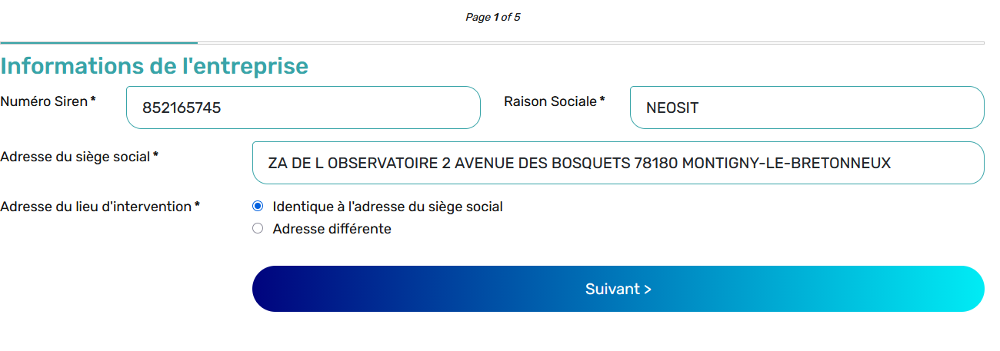
Amélioration de l'expérience utilisateur et réduction des erreurs de saisie.
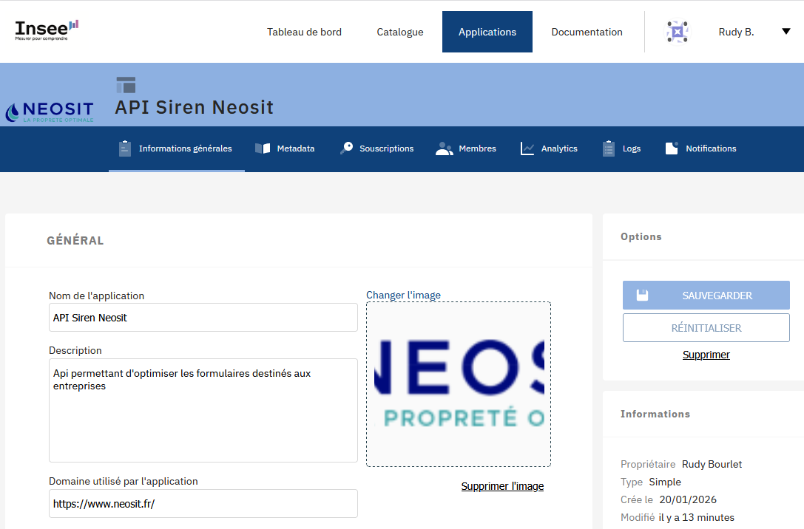
Automatisation de la validation et du traitement des données des formulaires.
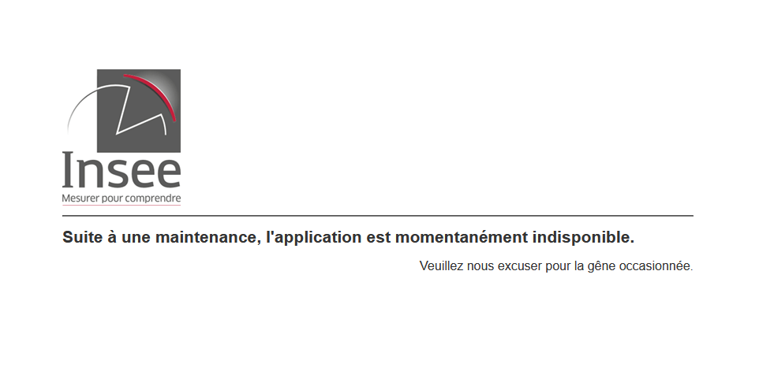
Ce que j'ai appris
- Intégration d'API pour enrichir les fonctionnalités.
- Automatisation avancée des processus métier.
- Gestion des erreurs et migration vers des solutions plus stables.
Génération de documents PDF depuis les formulaires
Objectifs
- Produire des documents clients homogènes et exploitables sans reprise manuelle.
- Assurer la traçabilité des documents émis pour le suivi opérationnel.
Outils
Tâches réalisées
Vérification de l'installation du plugin PDF de RSForm via coordination avec le détenteur de la licence.
Configuration du plugin pour générer des PDF personnalisés selon les données des formulaires.
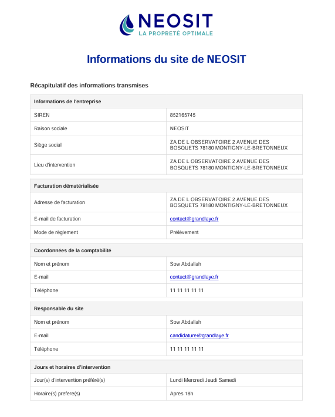
Écriture des modèles HTML/CSS pour définir la structure du document PDF.
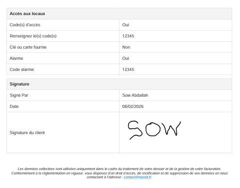
Ajout du logo et d'éléments graphiques via encodage base64 pour garantir leur intégration.
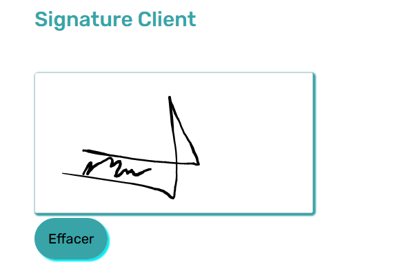
Ce que j'ai appris
- Utilisation d'outils de génération de PDF en PHP.
- Encodage d'images en base64 pour l'intégration documentaire.
- Automatisation de la création de documents à partir des formulaires.
Ajout d'un pad de signature électronique
Objectifs
- Permettre la validation numérique des documents dans le parcours client.
- Renforcer la conformité et la continuité du processus de contractualisation.
Outils
Tâches réalisées
Intégration d'un pad de signature électronique dans les formulaires du site.
Conversion de la signature en base64 pour son intégration dans les PDF générés.
Configuration de la génération PDF pour inclure automatiquement la signature.
Ce que j'ai appris
- Intégration de la signature électronique dans des formulaires web.
- Encodage des données de signature pour exploitation documentaire.
- Automatisation de PDF signés.
Amélioration du référencement et de la visibilité en ligne
Objectifs
- Renforcer le positionnement du site face à la concurrence.
- Soutenir la génération de trafic organique durable.
Outils
Tâches réalisées
Analyse des performances SEO et identification des opportunités d'amélioration.
Optimisation du contenu et de la structure du site pour améliorer le classement.
Création de contenus SEO avec l'appui de ChatGPT (descriptions produits, articles).
Suivi continu des performances et ajustement de la stratégie SEO.
Ce que j'ai appris
- Stratégies avancées de SEO et optimisation on-page.
- Pilotage du référencement avec des outils de suivi.
- Production de contenus SEO avec l'appui de l'IA.
Cybersécurité
Objectifs
- Protéger les données sensibles déposées via les formulaires du site.
- Réduire les risques d'accès non autorisé et de perte d'intégrité des fichiers.
Outils
Tâches réalisées
Configuration de FileZilla pour restreindre les accès FTP aux dossiers sensibles (CV, lettres de motivation, RIB).
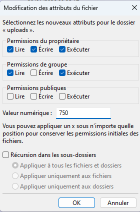
Modification des permissions d'accès de 755 à 750.
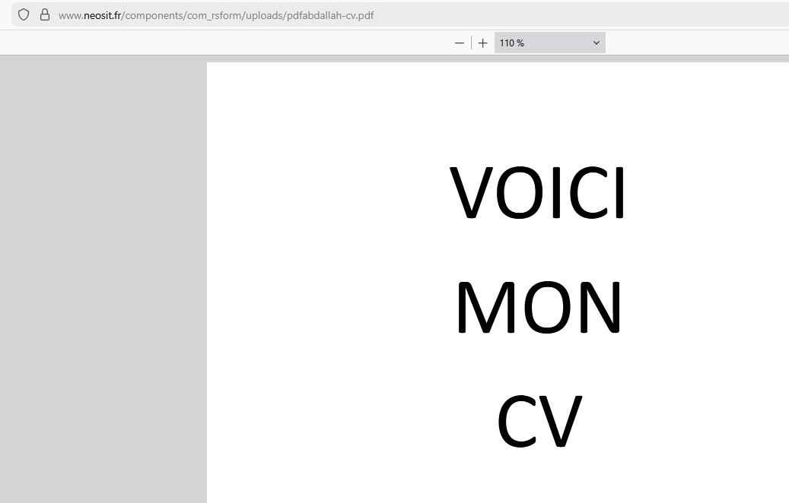
Mise en place d'une nomenclature unique des fichiers pour éviter conflits et écrasements.
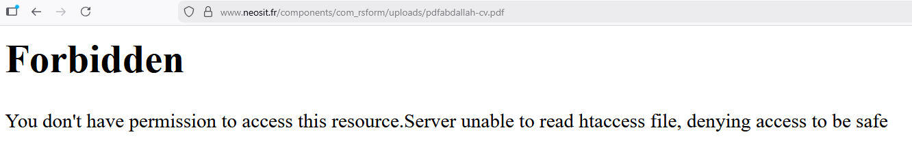
Ce que j'ai appris
- Configuration d'accès sécurisés pour protéger les données.
- Gestion des permissions sur les fichiers sensibles.
- Importance d'une nomenclature fiable pour la maintenance.
Modification d'un formulaire avec champs répétables
Objectifs
- Adapter la collecte d'informations aux situations multi-étages des entreprises clientes.
- Garantir une saisie flexible tout en conservant une structure de données exploitable.
Outils
Tâches réalisées
Modification du formulaire pour permettre la répétition de champs selon le nombre d'étages occupés.
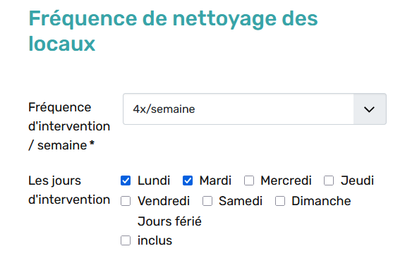
Utilisation de Python pour gérer la logique de répétition depuis la structure XML du formulaire.
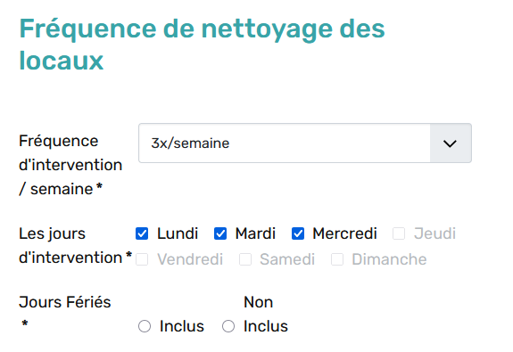
Adaptation de la génération PDF pour inclure uniquement les champs répétés renseignés.
Ce que j'ai appris
- Conception de formulaires dynamiques avec champs répétables.
- Gestion de logique conditionnelle pour des données variables.
- Intégration de données dynamiques dans des documents PDF.